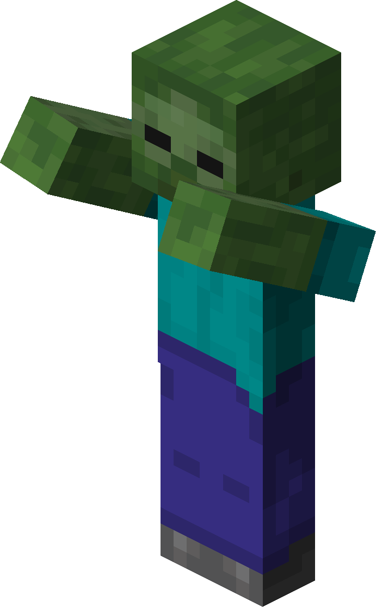
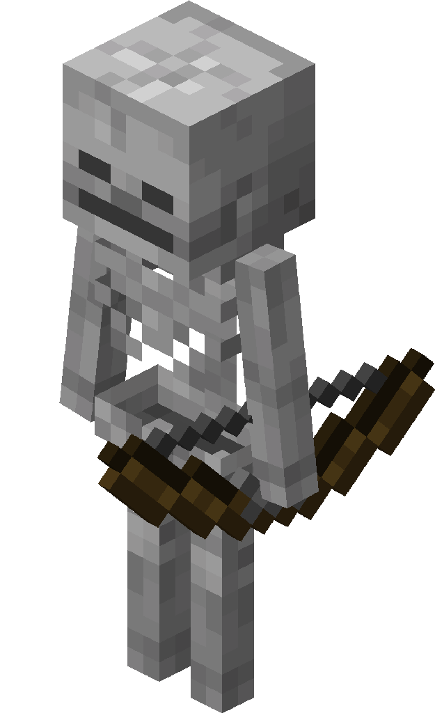

História dos Jogos
A história dos videogames é uma jornada fascinante que remonta a várias décadas. Desde os primeiros protótipos rudimentares até os jogos modernos de alta tecnologia, a indústria dos videogames evoluiu e se transformou em uma forma de entretenimento extremamente popular e influente. Aqui está uma visão geral da história dos videogames:
Década de 1940 e 1950:
O início da história dos videogames pode ser traçado até os anos 1940 e 1950, quando os primeiros computadores eletrônicos foram desenvolvidos. Nessa época, os cientistas começaram a explorar a possibilidade de criar programas interativos para entretenimento. Um dos primeiros exemplos foi o "Cathode-Ray Tube Amusement Device", criado por Thomas T. Goldsmith Jr. e Estle Ray Mann em 1947, que permitia aos jogadores controlar mísseis em um tubo de raios catódicos.
Década de 1960:
A década de 1960 foi marcada por avanços significativos na história dos videogames. Em 1962, Steve Russell e sua equipe do Instituto de Tecnologia de Massachusetts (MIT) criaram o jogo "Spacewar!", um dos primeiros jogos de computador a ganhar popularidade. Ele envolvia dois jogadores controlando naves espaciais em uma batalha no espaço.
Década de 1970:
Foi na década de 1970 que os videogames começaram a se tornar mais acessíveis e populares. Em 1972, a empresa Magnavox lançou o primeiro console de videogame doméstico, o Magnavox Odyssey, que permitia aos jogadores jogarem uma variedade de jogos em suas próprias TVs. Logo depois, em 1975, a Atari lançou o Pong, um dos primeiros jogos de arcade de sucesso, que simulava um jogo de tênis de mesa.
Década de 1980:
A década de 1980 é frequentemente considerada a "era de ouro" dos videogames. Foi nessa época que várias empresas e consoles icônicos surgiram. A Atari lançou o Atari 2600 em 1977, que se tornou o console de maior sucesso da época. Outros consoles populares incluíam o Intellivision, ColecoVision e o Nintendo Entertainment System (NES). Além disso, os arcades eram muito populares, com jogos como Pac-Man, Space Invaders e Donkey Kong.
Década de 1990:
A década de 1990 trouxe avanços tecnológicos significativos para os videogames. Os gráficos se tornaram mais avançados, os consoles se tornaram mais poderosos e os jogos se tornaram mais complexos. A Sega lançou o Mega Drive/Genesis em 1988, enquanto a Nintendo lançou o Super Nintendo Entertainment System (SNES) em 1990. Além disso, os jogos em CD-ROM se tornaram populares, permitindo maiores capacidades de armazenamento e cinematics mais elaborados.
Década de 2000:
Os anos 2000 trouxeram uma nova geração de consoles e avanços tecnológicos que mudaram a forma como jogamos. A Sony lançou o PlayStation 2 em 2000, que se tornou o console mais vendido de todos os tempos. A Microsoft entrou no mercado de consoles com o Xbox em 2001, seguido pelo Xbox 360 em 2005. A Nintendo inovou com o Nintendo GameCube e, mais tarde, com o lançamento do Nintendo Wii em 2006, introduzindo controles de movimento.
Década de 2010 em diante:
A história dos videogames na década de 2010 trouxe a popularização dos smartphones e dispositivos móveis como plataformas de jogos. Jogos casuais e gratuitos se tornaram muito populares, e empresas como a Apple e a Google criaram suas próprias lojas de aplicativos, oferecendo uma ampla variedade de jogos para download. Além disso, a Sony lançou o PlayStation 4 em 2013, e a Microsoft lançou o Xbox One no mesmo ano. A Nintendo lançou o Nintendo Switch em 2017, um console híbrido que pode ser usado tanto como console doméstico quanto como dispositivo portátil.
Atualmente, os videogames continuam a evoluir com avanços tecnológicos como realidade virtual (VR) e realidade aumentada (AR), gráficos cada vez mais realistas e jogos online multiplayer massivos. A indústria dos videogames se tornou uma das formas mais populares de entretenimento no mundo, abrangendo uma ampla variedade de gêneros e públicos.


História:
Minecraft é um jogo sandbox criado pelo desenvolvedor sueco Markus "Notch" Persson e lançado inicialmente em 2011 pela Mojang Studios. A história de Minecraft não possui um enredo principal linear, mas oferece aos jogadores um mundo aberto e infinito para explorar, construir e sobreviver.
No Minecraft, os jogadores começam em um ambiente gerado aleatoriamente, que consiste em terrenos, montanhas, cavernas, corpos de água e uma variedade de biomas. O mundo é composto por blocos de diferentes materiais, como terra, pedra, madeira, minérios e muito mais. Os jogadores podem coletar esses blocos e usá-los para construir estruturas, ferramentas, armas e até mesmo mecanismos complexos.
A principal tarefa no Minecraft é sobreviver. Durante o dia, o mundo é relativamente seguro, mas à noite, inimigos como zumbis, esqueletos e aranhas aparecem para atacar o jogador. Para se proteger, os jogadores podem construir abrigos, fortalezas e criar armaduras e armas.
Conforme os jogadores exploram o mundo, eles encontram várias cavernas, masmorras e minas cheias de tesouros e recursos valiosos. Esses recursos podem ser usados para criar itens melhores e mais poderosos, como armaduras de diamante e armas encantadas. Além disso, o jogo também possui uma dimensão alternativa chamada Nether, um reino infernal cheio de perigos e recursos exclusivos.
Embora o Minecraft não tenha uma narrativa principal, os jogadores podem definir seus próprios objetivos. Alguns podem se concentrar em construir cidades e estruturas enormes, enquanto outros podem preferir a exploração e a descoberta de novos biomas e tesouros. O jogo também oferece um modo criativo, onde os jogadores têm acesso a todos os recursos e podem construir livremente sem se preocupar com a sobrevivência.
Desde o seu lançamento, Minecraft se tornou um fenômeno global, com milhões de jogadores em todo o mundo. O jogo recebeu várias atualizações ao longo dos anos, introduzindo novos recursos, mobs (criaturas) e dimensões. Além disso, a comunidade de jogadores também contribuiu com uma infinidade de mods e pacotes de recursos que expandem ainda mais as possibilidades do jogo.
Minecraft não apenas conquistou um público fiel, mas também se tornou uma ferramenta educacional e uma plataforma para a criatividade. Com seu estilo de jogo único e a capacidade de criar e explorar livremente, o Minecraft continua a cativar jogadores de todas as idades ao redor do mundo.
Personagens:
 |
 |
 |
 |
|
 |
| STEVE |
ALEX |
ZOMBIE |
SKELETON |
CREEPER |
SPIDER |
História:
A história de Pokémon se passa em um mundo fictício onde os humanos, conhecidos como Treinadores Pokémon, vivem em harmonia com as criaturas chamadas Pokémon. O criador da franquia, Satoshi Tajiri, se inspirou em sua infância de explorar a natureza e colecionar insetos para criar esse universo.
No mundo de Pokémon, os Treinadores Pokémon embarcam em jornadas para capturar, treinar e batalhar com Pokémon. O objetivo principal de um Treinador é se tornar um Mestre Pokémon, um título conquistado ao derrotar outros Treinadores experientes e se destacar nas várias ligas e competições Pokémon.
A história começa quando um jovem protagonista (geralmente chamado de "Red" nos jogos principais) recebe seu primeiro Pokémon inicial de um renomado Professor Pokémon. Esse Pokémon inicial pode ser Bulbasaur, Charmander ou Squirtle, dependendo da versão do jogo.
O protagonista viaja por diferentes regiões, cada uma com uma Pokédex regional única, que registra informações sobre os Pokémon encontrados. Durante sua jornada, o protagonista enfrenta líderes de ginásio, que são Treinadores fortes especializados em um tipo específico de Pokémon. Ao derrotar esses líderes, o protagonista ganha insígnias de ginásio, que são necessárias para competir nas ligas Pokémon.
Além dos líderes de ginásio, existem outros Treinadores Pokémon, membros de equipes malignas e rivais que o protagonista encontra ao longo de sua jornada. As equipes malignas, como a Equipe Rocket, a Equipe Magma e a Equipe Aqua, têm planos nefastos que ameaçam o equilíbrio do mundo Pokémon, e cabe ao protagonista frustrar seus planos.
À medida que o protagonista captura mais Pokémon, eles evoluem e se tornam mais fortes. A evolução é um processo pelo qual um Pokémon muda de forma e se torna uma espécie diferente e mais poderosa. Existem várias maneiras de evoluir Pokémon, como ganhar experiência em batalhas, usar itens especiais ou trocar Pokémon com outros Treinadores.
A história de Pokémon varia de jogo para jogo, com cada região apresentando seus próprios desafios, lendas e Pokémon exclusivos. Além dos jogos, Pokémon se expandiu para uma franquia de mídia ampla, incluindo uma série de animação, filmes, jogos de cartas colecionáveis, brinquedos e muito mais.
No geral, a história de Pokémon envolve a jornada de um Treinador Pokémon para se tornar o melhor, explorando o mundo, fazendo amizades com Pokémon e superando desafios para alcançar a glória de se tornar um Mestre Pokémon.
Lista de jogos principais de Pokémon:
- Pokémon Red/Green/Blue (1996) - Game Boy
- Pokémon Yellow: Special Pikachu Edition (1998) - Game Boy
- Pokémon Gold/Silver (1999) - Game Boy Color
- Pokémon Crystal (2000) - Game Boy Color
- Pokémon Ruby/Sapphire (2002) - Game Boy Advance
- Pokémon Emerald (2004) - Game Boy Advance
- Pokémon FireRed/LeafGreen (2004) - Game Boy Advance
- Pokémon Diamond/Pearl (2006) - Nintendo DS
- Pokémon Platinum (2008) - Nintendo DS
- Pokémon HeartGold/SoulSilver (2009) - Nintendo DS
- Pokémon Black/White (2010) - Nintendo DS
- Pokémon Black 2/White 2 (2012) - Nintendo DS
- Pokémon X/Y (2013) - Nintendo 3DS
- Pokémon Omega Ruby/Alpha Sapphire (2014) - Nintendo 3DS
- Pokémon Sun/Moon (2016) - Nintendo 3DS
- Pokémon Ultra Sun/Ultra Moon (2017) - Nintendo 3DS
- Pokémon: Let's Go, Pikachu!/Let's Go, Eevee! (2018) - Nintendo Switch
- Pokémon Sword/Shield (2019) - Nintendo Switch
Personagens:
|
|
 |
 |
|
|
| ASH |
MISTY |
BROCK |
PIKACHU |
CARVALHO |
RED |
História:
A história do jogo Mario é uma das mais icônicas e conhecidas na indústria dos videogames. O personagem principal, Mario, foi criado pelo designer de jogos japonês Shigeru Miyamoto e estreou em 1981 no jogo "Donkey Kong" como "Jumpman", um carpinteiro corajoso que resgatava sua namorada, Pauline, das garras de um gorila chamado Donkey Kong.
O personagem de Mario se tornou extremamente popular, e Miyamoto decidiu dar-lhe seu próprio jogo. Em 1983, a Nintendo lançou "Mario Bros.", onde Mario, juntamente com seu irmão Luigi, trabalham como encanadores em Nova York, lutando contra criaturas como tartarugas e cobras nas tubulações da cidade.
No entanto, o jogo que realmente catapultou a fama de Mario e se tornou um ícone dos videogames foi "Super Mario Bros.", lançado para o console Nintendo Entertainment System (NES) em 1985. Nele, Mario embarca em uma missão para resgatar a Princesa Peach, que foi capturada pelo vilão Bowser, o Rei dos Koopas. Mario atravessa o Reino dos Cogumelos, enfrentando uma série de obstáculos, inimigos e perigos, como Goombas, Koopa Troopas e poços sem fundo.
O jogo é um side-scrolling de plataforma, onde Mario deve pular sobre obstáculos, evitar inimigos e coletar moedas e power-ups ao longo dos níveis. Os power-ups mais famosos incluem o cogumelo, que faz Mario crescer de tamanho, a flor de fogo, que permite a Mario lançar bolas de fogo, e a estrela, que torna Mario temporariamente invencível.
Desde então, Mario estrelou em inúmeros jogos, tornando-se o mascote oficial da Nintendo. Ele é conhecido por seu bigode, macacão azul, chapéu vermelho e suas aventuras emocionantes. A franquia "Super Mario" cresceu para incluir jogos de vários gêneros, como corrida, festa, esportes e RPGs, todos com Mario e seus amigos como personagens principais.
A história de Mario continuou a se expandir ao longo dos anos, com novos personagens sendo introduzidos, como Luigi, a Princesa Peach, Toad e Yoshi. Além disso, a série também explorou diferentes cenários, como o espaço, o fundo do mar e até mesmo o mundo real.
O sucesso duradouro do Mario é um testemunho de sua jogabilidade cativante, personagens adoráveis e design criativo. Até hoje, os jogos do Mario continuam sendo lançados e amados por jogadores de todas as idades, e Mario se tornou um ícone da cultura pop.
Lista de jogos principais de Mario:
- Super Mario Bros. (1985)
- Super Mario Bros. 3 (1988)
- Super Mario World (1990)
- Super Mario 64 (1996)
- Super Mario Sunshine (2002)
- New Super Mario Bros. (2006)
- Super Mario Galaxy (2007)
- New Super Mario Bros. Wii (2009)
- Super Mario 3D World (2013)
- Super Mario Odyssey (2017)
Personagens:
 |
|
|
 |
|
|
| MARIO |
LUIGI |
PEACH |
BOWSER |
YOSHI |
WARIO |
História:
A história do Sonic the Hedgehog começa quando ele foi criado pela empresa de videogames Sega no início da década de 1990. Sonic foi projetado para ser o mascote da Sega e rivalizar com o famoso Mario da Nintendo.
No enredo original, Sonic é um ouriço azul antropomórfico que vive na pacífica e idílica South Island. No entanto, a tranquilidade é interrompida quando o maligno Dr. Robotnik, também conhecido como Dr. Eggman, chega com seus planos de dominar o mundo. Robotnik deseja usar as Esmeraldas do Caos, poderosas gemas místicas, para alimentar suas máquinas e criar um império robótico.
Sonic, sendo extremamente rápido e corajoso, se torna o defensor de South Island e dos animais que são capturados e transformados em robôs pelo Dr. Robotnik. Ele embarca em uma missão para coletar as Esmeraldas do Caos antes de Robotnik, a fim de impedir seus planos malignos e salvar seus amigos.
A jogabilidade dos jogos do Sonic é conhecida por sua velocidade e ação frenética. Os jogadores assumem o controle de Sonic enquanto ele percorre níveis cheios de obstáculos, inimigos e loops, coletando anéis dourados e derrotando os robôs de Robotnik ao longo do caminho. O objetivo é chegar ao fim do estágio e enfrentar um chefe final para avançar na história.
À medida que a série de jogos avançou, a história do Sonic se expandiu. Novos personagens foram introduzidos, como Tails, Knuckles, Amy Rose e Shadow the Hedgehog. Enredos mais complexos foram desenvolvidos, envolvendo viagens no tempo, dimensões alternativas e batalhas épicas entre o bem e o mal.
Além dos jogos, Sonic também protagonizou quadrinhos, desenhos animados e até mesmo um longa-metragem. Cada adaptação tem sua própria interpretação da história, mas geralmente envolve Sonic e seus amigos se unindo para derrotar as ameaças do Dr. Robotnik e proteger o mundo.
No geral, a história do Sonic the Hedgehog gira em torno do heróico ouriço azul que luta contra o malvado Dr. Robotnik para salvar seu mundo e seus amigos. Com sua velocidade, coragem e determinação, Sonic se tornou um ícone dos videogames e uma figura querida por fãs de todas as idades.
Lista de jogos principais de Sonic:
- Sonic the Hedgehog (1991)
- Sonic the Hedgehog 2 (1992)
- Sonic the Hedgehog 3 (1994)
- Sonic & Knuckles (1994)
- Sonic Adventure (1998)
- Sonic Adventure 2 (2001)
- Sonic Heroes (2003)
- Sonic the Hedgehog (2006)
- Sonic Unleashed (2008)
- Sonic Generations (2011)
- Sonic Mania (2017)
- Sonic Forces (2017)
Personagens:
|
|
|
|
|
|
| SONIC |
ROBOTNIK |
TAILS |
KNUCKLES |
ROSE |
SHADOW |
História:
Cuphead é um jogo eletrônico de plataforma desenvolvido e publicado pelo estúdio independente StudioMDHR. Foi lançado em setembro de 2017 para Microsoft Windows, Xbox One e posteriormente para Nintendo Switch.
A história de Cuphead se passa na fictícia Ilha Inkwell, onde os protagonistas, Cuphead e seu irmão Mugman, vivem. Um dia, eles acabam entrando em um cassino chamado "O Cassino do Diabo" e, atraídos pela perspectiva de ganhar muito dinheiro, fazem uma aposta com o próprio Diabo. No entanto, eles acabam perdendo a aposta.
Desesperados para não perder suas almas, Cuphead e Mugman imploram por misericórdia. O Diabo concorda em perdoá-los sob a condição de que eles coletem as almas de outros devedores que também perderam apostas com ele. Assim, os dois irmãos embarcam em uma jornada para derrotar uma série de chefes peculiares e poderosos, conhecidos como "Contratantes", a fim de cumprir seu acordo com o Diabo.
Durante sua jornada, Cuphead e Mugman atravessam diferentes níveis com estilos de arte e design inspirados nos desenhos animados da década de 1930. Eles enfrentam uma variedade de inimigos e chefes desafiadores, cada um com seus próprios padrões de ataque e habilidades únicas.
Ao longo do jogo, os jogadores podem adquirir moedas que podem ser usadas para comprar melhorias, habilidades especiais e armas mais poderosas em lojas espalhadas pela Ilha Inkwell. Essas melhorias ajudam os personagens principais a enfrentar os desafios cada vez mais difíceis que encontram.
Além da jogabilidade de plataforma e batalhas contra chefes, Cuphead também apresenta elementos de run and gun, permitindo que os jogadores enfrentem inimigos menores enquanto avançam pelos níveis.
Cuphead é elogiado por seu estilo de arte único, que recria a estética dos desenhos animados clássicos. O jogo também é conhecido por sua dificuldade desafiadora, exigindo precisão e habilidade dos jogadores para progredir.
Personagens:
|
|
|
|
|
|
| CUPHEAD |
MUGMAN |
ELDER |
DJIMINI |
KING DICE |
THE DEVIL |